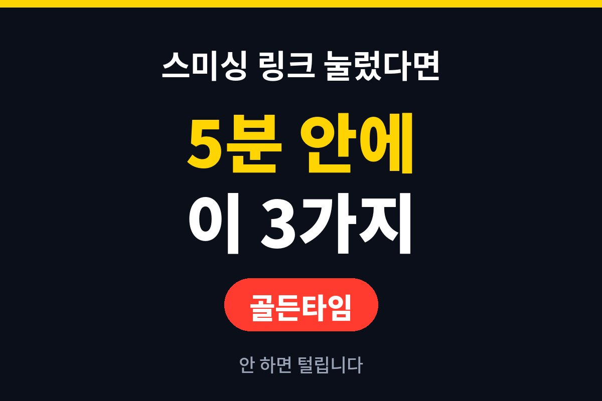
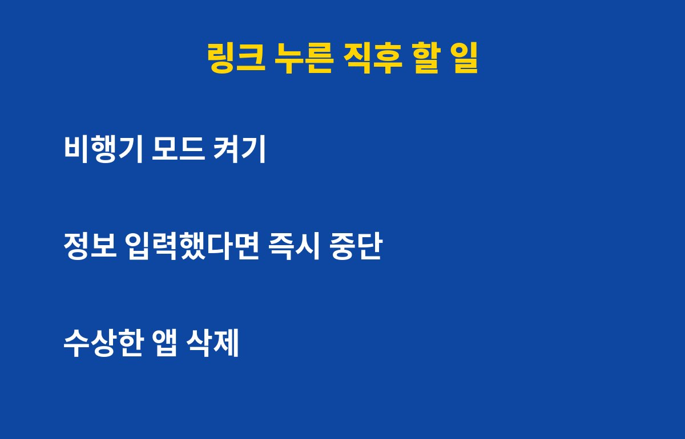
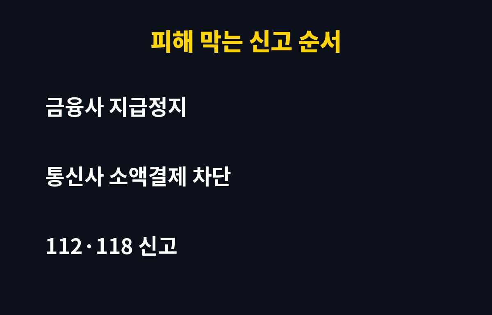

스미싱 링크를 방금 눌렀다면 지금부터 5분이 제일 중요해요. 택배·청첩장·건강검진 문자를 눌러본 분이라면, 그 다음에 뭘 해야 돈이 안 털리는지 궁금하시죠?
링크만 눌렀다고 곧바로 돈이 빠져나가는 건 아니에요. 문제는 그다음 행동이에요. 연결된 가짜 사이트에서 이름·주민번호·카드번호·인증번호를 넣었거나, 안내에 따라 앱을 설치했다면 이야기가 달라져요.
특히 "앱을 설치해야 확인할 수 있다"는 문구는 거의 악성 앱 유도예요. 설치 파일이 폰에 깔리면 문자·통화 내용을 엿보거나 소액결제 인증번호를 가로챌 수 있어요. 그래서 내가 어디까지 진행했는지부터 확인하는 게 첫 단계예요.
순서대로 따라 하면 돼요. 당황해서 폰을 계속 만지는 게 제일 위험해요.
1) 비행기 모드를 켜세요. 악성 앱이 외부로 정보를 보내는 길을 먼저 막는 거예요.
2) 아무것도 더 입력하지 마세요. 열려 있는 가짜 사이트는 바로 닫고, 안내에 따라 설치한 앱이 있다면 설정에서 삭제하세요. 삭제가 안 되면 안전 모드나 보안 앱 검사를 이용하세요.
3) 다른 기기로 비밀번호를 바꾸세요. 감염이 의심되는 폰이 아니라 가족 폰이나 PC에서 바꿔야 해요. 금융·포털·SNS 순으로 바꾸고 2단계 인증도 켜두세요.

이때는 속도가 곧 돈이에요. 아래 표 순서대로 연락하세요.
| 내가 한 행동 | 바로 할 일 |
|---|---|
| 링크만 눌렀다 | 비행기 모드, 앱 설치 여부 확인, 비밀번호 변경 |
| 카드·계좌 정보 입력 | 금융사 고객센터에 지급정지·카드 재발급 요청 |
| 인증번호·신분증 정보 입력 | 통신사 소액결제 차단, 명의도용 방지 서비스 가입 |
| 이미 돈이 빠져나갔다 | 112 신고 후 금융사에 피해 구제 신청 |
스미싱 문자 자체는 118(불법스팸대응센터)로 신고할 수 있어요. 문자 화면과 링크 주소를 캡처해 두면 신고와 피해 구제 때 증거로 쓸 수 있어요.
가장 쉬운 방법은 "문자 속 링크는 일단 안 누른다"예요. 택배나 기관은 공식 앱이나 공식 사이트에서 직접 조회하세요. 그리고 폰 설정에서 출처를 알 수 없는 앱 설치를 막아두세요. 이 설정 하나만으로도 악성 앱 피해를 크게 줄일 수 있어요.
통신사에서 제공하는 스팸 차단 기능과 휴대폰 소액결제 한도 설정도 꼭 확인해 보세요. 쓰지 않는다면 아예 막아두는 게 안전해요.

도움이 되셨다면 구독 눌러두세요. 다음에도 내 돈 지키는 IT 소식 빠르게 알려드릴게요!
기사·공식 발표 기준이며 출시·가격 정보는 바뀔 수 있어요.